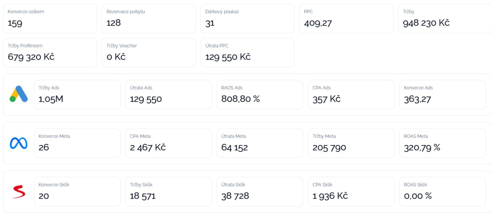

ZM-001
Základní metriky
Konverze celkem
Celkový počet evidovaných konverzí za sledované období.
159

ZM-001
Odkaz z levé navigace i z přehledové karty vede na tento detail. Ve screenshotu je vyznačen stejný identifikátor prvku.
Vizuální PDF katalog metrik dashboardu. Každý blok obsahuje ID prvku, název, hodnotu, stručný popis a odkaz na detail se screenshotem označeným stejným ID.
Souhrnný přehled hlavních obchodních metrik a celkového výkonu kampaní.
Celkový počet evidovaných konverzí za sledované období.
ZM-002Počet konverzí typu rezervace pobytu.
ZM-003Počet konverzí spojených s dárkovým poukazem.
ZM-004Souhrnná PPC metrika zobrazená v hlavním přehledu.
ZM-005Celkové tržby ze sledovaných zdrojů.
ZM-006Tržby připsané zdroji Profitroom.
ZM-007Tržby připsané voucherům.
ZM-008Celková útrata za PPC kampaně.
Celkový počet evidovaných konverzí za sledované období.

Počet konverzí typu rezervace pobytu.
Počet konverzí spojených s dárkovým poukazem.
Souhrnná PPC metrika zobrazená v hlavním přehledu.
Celkové tržby ze sledovaných zdrojů.
Tržby připsané zdroji Profitroom.
Tržby připsané voucherům.
Celková útrata za PPC kampaně.
Výkon placených kampaní v Google Ads.
Tržby připsané kampaním Google Ads.
GA-002Náklady vynaložené na Google Ads.
GA-003Návratnost útraty v Google Ads dle zobrazené metriky.
GA-004Cena za jednu konverzi v Google Ads.
GA-005Počet konverzí evidovaný pro Google Ads.
Tržby připsané kampaním Google Ads.
Náklady vynaložené na Google Ads.
Návratnost útraty v Google Ads dle zobrazené metriky.
Cena za jednu konverzi v Google Ads.
Počet konverzí evidovaný pro Google Ads.
Výkon kampaní v ekosystému Meta.
Počet konverzí připsaných kanálu Meta.
MT-002Cena za jednu konverzi v Meta kampaních.
MT-003Náklady vynaložené na Meta kampaně.
MT-004Tržby připsané Meta kampaním.
MT-005Návratnost reklamních výdajů Meta kampaní.
Počet konverzí připsaných kanálu Meta.
Cena za jednu konverzi v Meta kampaních.
Náklady vynaložené na Meta kampaně.
Tržby připsané Meta kampaním.
Návratnost reklamních výdajů Meta kampaní.
Výkon kampaní v reklamním systému Sklik.
Počet konverzí připsaných Skliku.
Tržby připsané Sklik kampaním.
Náklady vynaložené na Sklik kampaně.
Cena za jednu konverzi ve Skliku.
Návratnost reklamních výdajů ve Skliku.